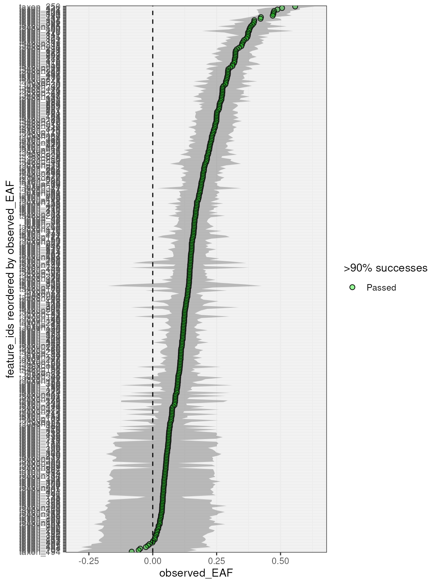
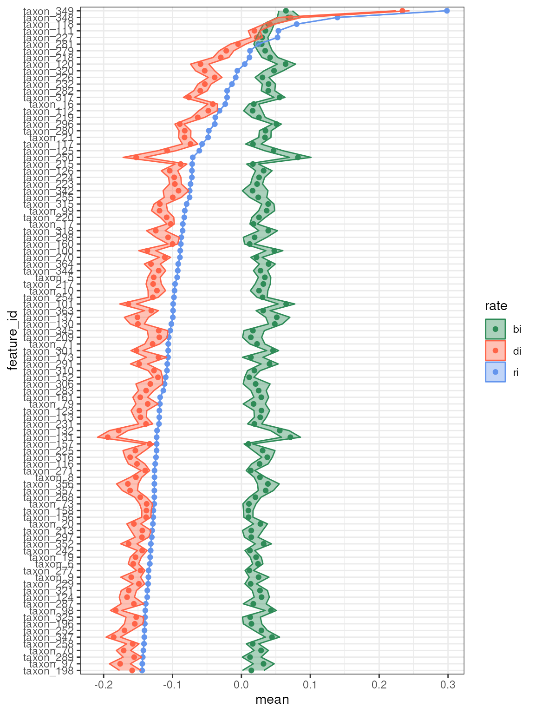

Background
Using qSIP2, we can estimate the growth rate of individual features (i.e. bacteria) in a microbial community by fitting a growth model to the abundance of a labeled taxon over time. Assumptions for growth include
- there is no isotopic labeling at time zero
- the pool of unlabeled features will not go up over time
- bacteria that incorporate the isotope are 100% labeled
Using the calculated EAF values from the standard workflow, we therefore can say an EAF of 0.5 means that 50% of the bacteria are labeled and the result of growth since time zero (i.e. “birth” or ). Further, using quantitative abundance values in both time zero and time point samples, we can estimate the death rate () of individual features by calculating the decrease in unlabeled features. Together, we get at the growth rate using the equation for each feature 1. This is one of the main advantages of qSIP where if equals then traditional community analysis would detect no change in the community, whereas qSIP would detect growth and death of individual features.
Growth analysis starts with calculations of EAF values, and therefore
requires the standard workflow (vignette("qSIP_workflow"))
to be run first with only slight modifications.
For growth, three additional arguments are required for the
qsip_source_data creation.
-
timepoint- a numerical value for the timepoint of the source material. There is often a0timepoint, but these can be any values and the growth rate will be calculated as the difference between time points. Further, these can be any units (e.g. days, hours, etc.), and the interpretation of the growth rate will depend on the units (e.g. “per day” or “per hour”). -
total_abundance- a numerical value for the total abundance of the source material. Ideally, this is a copy number from qPCR using the same primers as the sequencing. Further, it should be standardized to some unit of starting material (e.g. copies per gram of soil). If it isn’t, then the nextvolumeargument is important. -
volume- a numerical value for the volume of the source material DNA that the copy number was derived from. Typically the volume is the same for all source material DNA extractions, but if your starting volume for qPCR was different then this parameter is important.
Growth Object
An example growth object is provided with the qSIP2
package called example_qsip_growth_object. We can check
which columns contain the three additional arguments for growth, and
pull out a table with the relevant columns.
get_dataframe(example_qsip_growth_object, type = "source") |>
select(source_mat_id, isotope, timepoint, total_abundance, volume) |>
arrange(timepoint, isotope)| source_mat_id | isotope | timepoint | total_abundance | volume |
|---|---|---|---|---|
| source_1 | Time0 | 0 | 20934337125 | 1 |
| source_10 | Time0 | 0 | 56376407410 | 1 |
| source_13 | Time0 | 0 | 7952816086 | 1 |
| source_4 | Time0 | 0 | 38061061332 | 1 |
| source_7 | Time0 | 0 | 28775383886 | 1 |
| source_11 | 16O | 10 | 5053795437 | 1 |
| source_14 | 16O | 10 | 219349821 | 1 |
| source_2 | 16O | 10 | 5006451196 | 1 |
| source_5 | 16O | 10 | 5440927504 | 1 |
| source_8 | 16O | 10 | 3000381981 | 1 |
| source_12 | 18O | 10 | 5043787157 | 1 |
| source_15 | 18O | 10 | 200708494 | 1 |
| source_3 | 18O | 10 | 5524820407 | 1 |
| source_6 | 18O | 10 | 5242785770 | 1 |
| source_9 | 18O | 10 | 3702908766 | 1 |
From this table, we can notice a few things. First, there are 15
total samples - 5 with timepoint 0, and 5 each with 16O or 18O isotopes.
Second, some sources do not have a standard isotope
designation, but instead say “Time0”. This is a special allowed
isotope type flagging these sources as unfractionated, and
therefor no EAF value will be calculated for them. Third, the
volume column is the same for all samples which indicates
that the total_abundance is already standardized to the
same volume. Indeed if we look at the column that
total_abundance was derived from we can tell from the name
that it is a copy number to a standardize amount of soil (16S copies per
gram of soil).
example_qsip_growth_object@source_data@total_abundance
#> [1] "qPCR.16S.copies.g.soil"EAF Workflow
As mentioned above, the growth workflow requires the EAF values to be
calculated first. Note, we are running with
allow_failures = TRUE, but still with a minimum of 4
labeled and 4 unlabeled fractions.
q <- run_feature_filter(example_qsip_growth_object,
group = "Day 10",
unlabeled_source_mat_ids = c("source_11", "source_14", "source_2", "source_5", "source_8"),
labeled_source_mat_ids = c("source_12", "source_15", "source_3", "source_6", "source_9"),
min_labeled_fractions = 4,
min_unlabeled_fractions = 4
) |>
run_resampling(
resamples = 1000,
with_seed = 1332,
allow_failures = TRUE,
progress = FALSE
) |>
run_EAF_calculations()
#> There are initially 364 unique feature_ids
#> 364 of these have abundance in at least one fraction of one source_mat_id
#> =+=+=+=+=+=+=+=+=+=+=+=+=+=+=+=+=+=+=+=+=+=+=+=+=+
#> Filtering feature_ids by fraction...
#> 15 unlabeled and 11 labeled feature_ids were found in zero fractions in at least one source_mat_id
#> 70 unlabeled and 47 labeled feature_ids were found in too few fractions in at least one source_mat_id
#> 364 unlabeled and 364 labeled feature_ids passed the fraction filter
#> In total, 364 unique feature_ids passed the fraction filtering requirements...
#> =+=+=+=+=+=+=+=+=+=+=+=+=+=+=+=+=+=+=+=+=+=+=+=+=+
#> Filtering feature_ids by source...
#> 6 unlabeled and 5 labeled feature_ids failed the source filter because they were found in too few sources
#> 358 unlabeled and 359 labeled feature_ids passed the source filter
#> =+=+=+=+=+=+=+=+=+=+=+=+=+=+=+=+=+=+=+=+=+=+=+=+=+
#> In total, 358 unique feature_ids passed all fraction and source filtering requirements
#> Warning: 8 unlabeled and 2 labeled feature_ids had resampling failures. Run
#> `get_resample_counts()` or `plot_successful_resamples()` on your <qsip_data>
#> object to inspect.Overall, most features had robust resampling results, with only a few having less than 99% success in the labeled sources.
get_resample_counts(q) |>
filter(labeled_resamples < 1000 | unlabeled_resamples < 1000)
#> # A tibble: 8 × 3
#> feature_id labeled_resamples unlabeled_resamples
#> <chr> <int> <int>
#> 1 taxon_113 1000 999
#> 2 taxon_180 1000 999
#> 3 taxon_234 996 990
#> 4 taxon_250 993 990
#> 5 taxon_278 1000 999
#> 6 taxon_292 1000 999
#> 7 taxon_327 1000 999
#> 8 taxon_341 1000 999
plot_EAF_values(q,
confidence = 0.9,
error = "ribbon",
success_ratio = 0.9
)
#> Confidence level = 0.9
Growth Workflow
Time zero total abundances
In addition to the EAF values stored in the qsip_data
object, we also need a table with the
values for each feature
at timepoint
,
in this case time 0. This value is the total abundance of each
feature and is the sum of both the labeled and unlabeled features
(equation 2 from Koch, 20182). Note you don’t have to always compare
against time zero. If you have a 7-day and 14-day timepoint you can set
day 7 as the initial timepoint here.
This table is created with the get_N_total_it() function
where you pass the original qsip_data object and the
timepoint of interest.
get_N_total_it() should be run on the initial
qsip_data object before any filtering or resampling has
been done. This is because the unfractionated time zero sources will not
be present in the filtered data.
N_total_i0 <- get_N_total_it(example_qsip_growth_object, t = 0)
#> Warning: 1 feature_ids have zero abundance at time 0:
#> Warning: taxon_194Note we get a warning here that taxon_194 has zero abundance at
t = 0. Therefore, this feature cannot have a growth rate
calculated because any change in abundance would be considered infinite
growth.
| feature_id | N_total_i0 | timepoint1 |
|---|---|---|
| taxon_1 | 1595472105 | 0 |
| taxon_2 | 64576684 | 0 |
| taxon_3 | 4488930 | 0 |
| taxon_4 | 2494463 | 0 |
| taxon_5 | 9849881 | 0 |
| taxon_6 | 697760597 | 0 |
Growth rate calculations
Using the abundance values stored in N_total_i0 and the
resampled EAF values stored in q, we can calculate the
growth rate for each feature. This is done with the
run_growth_calculations() function where you pass the
qsip_data object, the N_total_i0 table, and
the growth model to use. The growth model can be either “exponential” or
“linear”.
q <- run_growth_calculations(q,
N_total_it = example_qsip_growth_t0,
growth_model = "exponential")
#> Warning: 31862 resamplings have a negative EAF value or calculated labeled copy
#> numbers less than 0. These values have been filtered out and added to
#> @growth$negative_labeledNote the warning message, which we will return to in a minute.
Growth calculation results
We can get a dataframe of the growth calculations with the
get_growth_data() function. Here, we will also filter to
just the data for the first resample.
get_growth_data(q) |>
filter(resample == 1)| feature_id | timepoint1 | timepoint2 | resample | N_total_i0 | N_total_it | N_light_it | N_heavy_it | EAF | r_net | bi | di | ri |
|---|---|---|---|---|---|---|---|---|---|---|---|---|
| taxon_1 | 0 | 10 | 1 | 1595472105 | 148586025.4 | 136810605.5 | 11775419.83 | 0.0790913 | -1446886080 | 0.0082567 | -0.2456327 | -0.2373761 |
| taxon_2 | 0 | 10 | 1 | 64576684 | 10029559.5 | 9050990.0 | 978569.49 | 0.0973733 | -54547125 | 0.0102663 | -0.1964979 | -0.1862317 |
| taxon_3 | 0 | 10 | 1 | 4488930 | 461034.7 | 400320.0 | 60714.77 | 0.1314289 | -4027895 | 0.0141209 | -0.2417106 | -0.2275896 |
| taxon_4 | 0 | 10 | 1 | 2494463 | 379679.5 | 353589.2 | 26090.33 | 0.0685792 | -2114784 | 0.0071192 | -0.1953693 | -0.1882501 |
| taxon_5 | 0 | 10 | 1 | 9849881 | 3875688.9 | 2817314.3 | 1058374.58 | 0.2725340 | -5974192 | 0.0318939 | -0.1251675 | -0.0932736 |
| taxon_6 | 0 | 10 | 1 | 697760597 | 184676166.7 | 146843360.6 | 37832806.09 | 0.2044504 | -513084430 | 0.0229237 | -0.1558510 | -0.1329272 |
Some columns contain important, but redundant information. For
example, for each feature timepoint1,
timepoint2, N_total_i0,
N_total_it, r_net and ri are the
same for all rows.
-
timepoint1andtimepoint2are the timepoints for the growth calculations. For this dataset, we are comparing day 10 to day 0, so the rates will be in units of “per day”. -
N_total_i0is the total abundance of each feature at time 0, andN_total_itis the total abundance of each feature at time .r_netis just the copy number difference between the two time points for each feature, or . -
riis the overall growth rate, where a negative value indicates more death than birth
The remaining columns use the resampled EAF data to determine which
portion of the N_total_it copies correspond to those taking
up the substrate and those that remain unlabeled.
-
N_light_itcomes from equation 3 of Koch, 20183, and is the proportion ofN_total_itthat isn’t labeled. -
N_heavy_itis the proportion ofN_total_itthat is labeled, and is roughly -
biis the per-unit-of-time birth rate,diis the death rate
Summarizing Growth Data
We can summarize the growth data at a specified
confidence with the summarize_growth_values()
function. This function will calculate the mean, sd and confidence
intervals for the birth and death rates, as well as EAF.
summarize_growth_values(q, confidence = 0.9) |> arrange(feature_id)
#> Confidence level = 0.9
#> # A tibble: 351 × 28
#> feature_id timepoint1 timepoint2 N_total_i0 N_total_it r_net observed_bi
#> <chr> <dbl> <dbl> <dbl> <dbl> <dbl> <dbl>
#> 1 taxon_1 0 10 1595472105. 148586025. -1.45e9 0.0109
#> 2 taxon_10 0 10 2793486. 1058203. -1.74e6 0.0250
#> 3 taxon_100 0 10 4698016. 1933443. -2.76e6 0.0476
#> 4 taxon_101 0 10 4359459. 1617996. -2.74e6 0.0642
#> 5 taxon_102 0 10 45813796. 6260993. -3.96e7 0.00402
#> 6 taxon_103 0 10 4639329. 635123. -4.00e6 0.00392
#> 7 taxon_104 0 10 35390036. 6306709. -2.91e7 0.00618
#> 8 taxon_105 0 10 381417581. 64847518. -3.17e8 0.00584
#> 9 taxon_106 0 10 8761701. 1541086. -7.22e6 0.00477
#> 10 taxon_107 0 10 3724648. 338098. -3.39e6 0.00231
#> # ℹ 341 more rows
#> # ℹ 21 more variables: observed_di <dbl>, observed_ri <dbl>, successes <int>,
#> # resampled_N_mean <dbl>, resampled_rnet_mean <dbl>, resampled_bi_mean <dbl>,
#> # resampled_bi_sd <dbl>, resampled_bi_lower <dbl>, resampled_bi_upper <dbl>,
#> # resampled_di_mean <dbl>, resampled_di_sd <dbl>, resampled_di_lower <dbl>,
#> # resampled_di_upper <dbl>, resampled_ri_mean <dbl>, resampled_ri_sd <dbl>,
#> # resampled_ri_lower <dbl>, resampled_ri_upper <dbl>, …Growth rate plots
plot_growth_values(q,
confidence = 0.9,
top = 100,
alpha = 0.4,
error = "ribbon"
)
#> Confidence level = 0.9
When growth cannot be calculated
There are a few cases where growth cannot be calculated or the results can be non-sensical. Some cases result in the entire feature being unusable, while other cases just remove specific resamples for that feature while using the remaining features where possible.
No time zero data
As noted above, taxon_194 has zero abundance at time zero. Therefore,
the growth rate cannot be calculated because any change in abundance
would be considered infinite growth. The intermediate values for these
features can be found in the get_growth_data() function,
but the feature will be omitted entirely from the
summarize_growth_values() data.
Negative EAF values
This is related to the warning we received above stating there were
31862 resamplings that have “negative EAF values”. While negative EAF
values can be common due to noise, it doesn’t make sense when
calculating
and
values. This happens because
gets calculated to actually have more copies than
,
which is impossible, and therefore
will be a negative number of copies, which is also impossible. Below is
from the q@growth$negative_labeled dataframe for taxon_1
explaining the reasoning. Z (equation 4 from Hungate, 20154) is the difference
between the labeled and unlabeled WAD value, so when Z is negative, it
indicates the WAD values were lower for the labeled fractions, likely
due to noise in the SIP process.
q@growth$negative_labeled |>
filter(feature_id == "taxon_1") |>
select(feature_id, N_total_it, resample, Z, EAF, N_light_it, N_heavy_it)| feature_id | N_total_it | resample | Z | EAF | N_light_it | N_heavy_it |
|---|---|---|---|---|---|---|
| taxon_1 | 148586025 | 40 | -0.0020331 | -0.0309272 | 153190583 | -4604557.9 |
| taxon_1 | 148586025 | 56 | -0.0023248 | -0.0353985 | 153856294 | -5270268.8 |
| taxon_1 | 148586025 | 80 | -0.0001851 | -0.0028122 | 149004712 | -418686.2 |
| taxon_1 | 148586025 | 144 | -0.0027846 | -0.0422962 | 154883248 | -6297222.6 |
| taxon_1 | 148586025 | 145 | -0.0003687 | -0.0056138 | 149421834 | -835808.9 |
| taxon_1 | 148586025 | 290 | -0.0007288 | -0.0110860 | 150236552 | -1650526.9 |
taxon_1 had a total of 28 resamplings fall into this category, but
the remaining 972 were successful. This number is reflected in the
successes column of
summarize_growth_values().
summarize_growth_values(q, confidence = 0.9) |>
filter(feature_id == "taxon_1") |>
select(feature_id, successes)
#> Confidence level = 0.9
#> # A tibble: 1 × 2
#> feature_id successes
#> <chr> <int>
#> 1 taxon_1 972